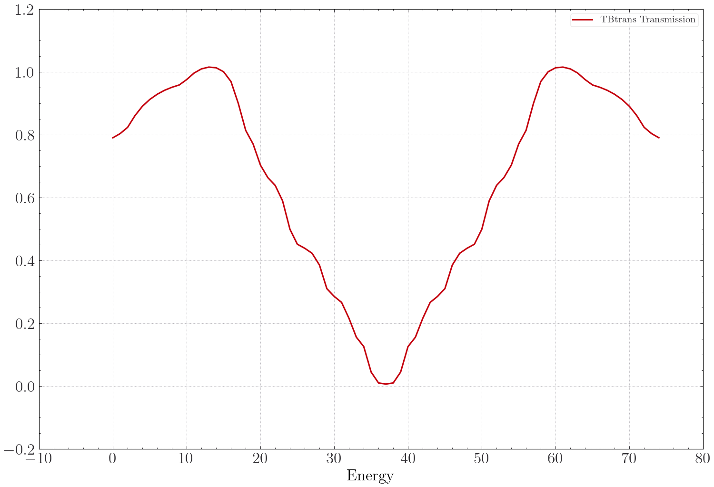
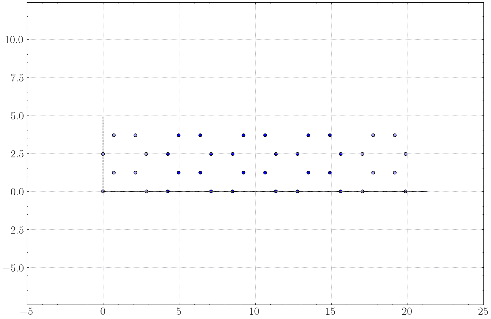
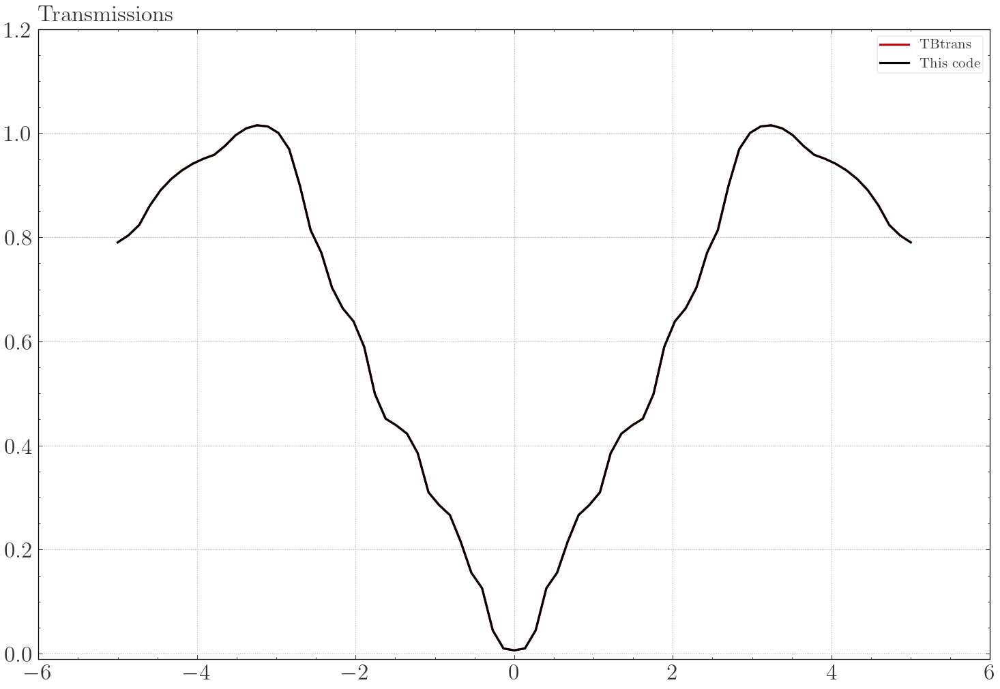
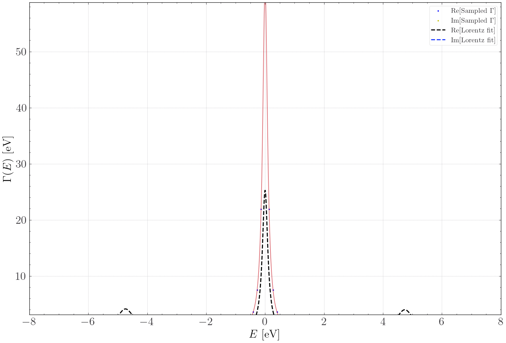
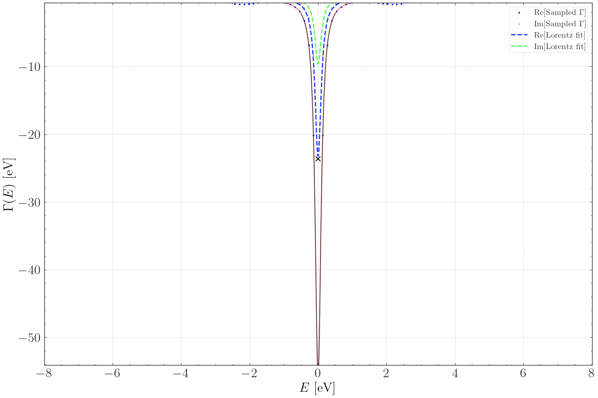
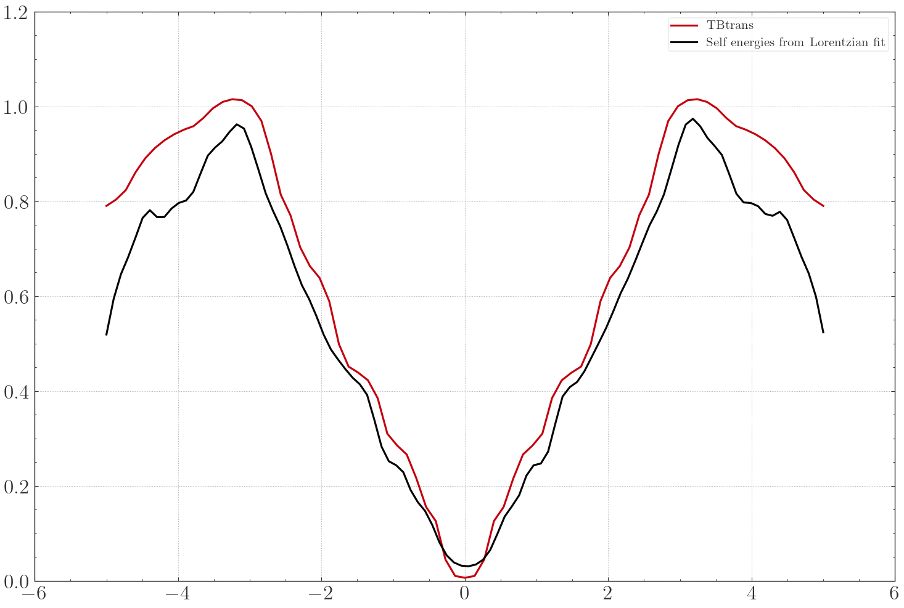
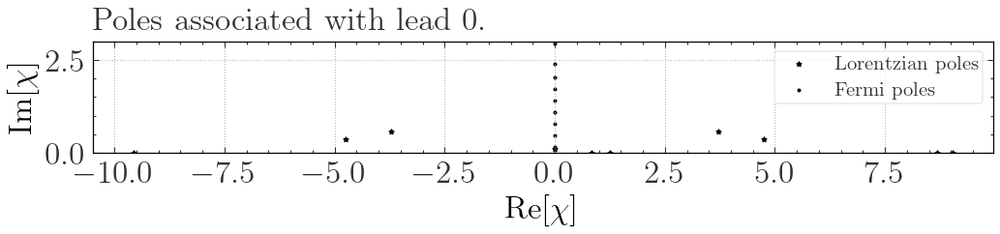
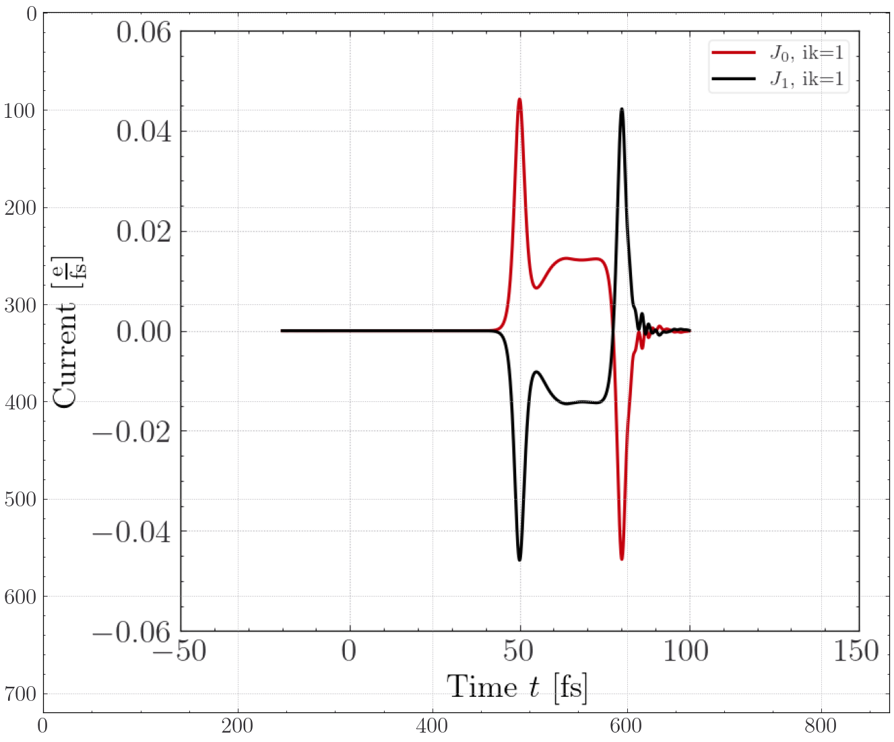

T3: Graphene
We now turn to graphene, which is a well-known hexagonal crystal structure. The new thing we will have to deal with for this example, is the need for \(\vec{k}\)-point sampling. It gives us some more equations to propagate, but it is just more of the same type of problem as we dealt with in the chain-example. Here we just sample five points and look at the differences. Beyond this, the procedure is the same. We proceed to do much of what has been covered previously in the next lines of code, and the geometry creation, Fermi-expansion and calls to TBtrans should be familiar. The calculation is very coarse and should not be taken as a good graphene calculation, but as a demonstration of how to propagate decoupled systems
[9]:
import sisl
import matplotlib.pyplot as plt
import numpy as np
from Zandpack.TimedependentTransport import TD_Transport as TDT
import matplotlib.image as img
plt.rcParams['figure.figsize'] = [12,8]
%matplotlib inline
tx = 3
ty = 2
t_elec = -2.7
t_dev = -2.7
g = sisl.geom.graphene(orthogonal = True).tile(ty,1)
geom_dev = g.tile(tx+2,0)#.add_vacuum(10,1)
geom_em = g.copy()
geom_ep = g.move((tx+1) * g.cell[0,:])
# sisl.plot(geom_dev); plt.axis('equal'); plt.show()
eta = 1e-1
line = np.vstack([np.linspace(-5,5,75) + 1j * eta]*2)
Test = TDT([geom_em,geom_ep], geom_dev, kT_i = [0.05, 0.05])
Test.Make_Contour(line, 12, pole_mode = 'JieHu2011')
ky = 8
Test.Electrodes( semi_infs = ['-a1', '+a1'] , kp = [[50,ky,1],[50,ky,1]])
Test.make_device(elec_inds = [[i for i in range(geom_em.na)],
[4*(tx+1)*ty+i for i in range(geom_em.na)]],
k = [1,ky,1], k_tbtrans = [1,ky,1])
elec = sisl.Hamiltonian(geom_em)
elec.construct([[0.1, 1.5],
[0, t_dev] ])
Test.run_electrodes(manual_H = [elec, elec])
dev_H = sisl.Hamiltonian(geom_dev)
dev_H.construct([[0.1, 1.5],
[0, t_dev] ])
Test.run_device(manual_H = dev_H)
Test.read_data()
plt.show()
plt.plot(Test.tbtT[Test.sampling_idx[0]], label = 'TBtrans Transmission')
plt.xlabel('Energy')
plt.legend()
plt.show()
/home/investigator/.local/lib/python3.10/site-packages/spglib/spglib.py:115: DeprecationWarning: dict interface (SpglibDataset['std_lattice']) is deprecated.Use attribute interface ({self.__class__.__name__}.{key}) instead
warnings.warn(
/home/investigator/.local/lib/python3.10/site-packages/spglib/spglib.py:115: DeprecationWarning: dict interface (SpglibDataset['std_positions']) is deprecated.Use attribute interface ({self.__class__.__name__}.{key}) instead
warnings.warn(
/home/investigator/.local/lib/python3.10/site-packages/spglib/spglib.py:115: DeprecationWarning: dict interface (SpglibDataset['std_types']) is deprecated.Use attribute interface ({self.__class__.__name__}.{key}) instead
warnings.warn(
/home/investigator/.local/lib/python3.10/site-packages/spglib/spglib.py:115: DeprecationWarning: dict interface (SpglibDataset['number']) is deprecated.Use attribute interface ({self.__class__.__name__}.{key}) instead
warnings.warn(
/home/investigator/.local/lib/python3.10/site-packages/spglib/spglib.py:115: DeprecationWarning: dict interface (SpglibDataset['transformation_matrix']) is deprecated.Use attribute interface ({self.__class__.__name__}.{key}) instead
warnings.warn(
/home/investigator/.local/lib/python3.10/site-packages/spglib/spglib.py:115: DeprecationWarning: dict interface (SpglibDataset['international']) is deprecated.Use attribute interface ({self.__class__.__name__}.{key}) instead
warnings.warn(
/home/investigator/.local/lib/python3.10/site-packages/spglib/spglib.py:115: DeprecationWarning: dict interface (SpglibDataset['std_rotation_matrix']) is deprecated.Use attribute interface ({self.__class__.__name__}.{key}) instead
warnings.warn(
Running TB-Trans in Directory: Device!
dep:0: SislDeprecation: tbtncSileTBtrans.geom is deprecated, please use '.geometry'.0.14 [>=0.16]
Calculating corrections for electrode 0. (Normal electrode)
Calculating corrections for electrode 1. (Normal electrode)
Calculating corrections for electrode 0. (Normal electrode)
Calculating corrections for electrode 1. (Normal electrode)
Calculating corrections for electrode 0. (Normal electrode)
Calculating corrections for electrode 1. (Normal electrode)
Calculating corrections for electrode 0. (Normal electrode)
Calculating corrections for electrode 1. (Normal electrode)
Calculating corrections for electrode 0. (Normal electrode)
Calculating corrections for electrode 1. (Normal electrode)
Building ES - H - Self Energies
[0, 1, 2, 3, 4]
Using S = S
Overlap Included!
Using S = S
Using S = S
Using S = S
Using S = S

[10]:
Test.Device.Visualise()
Test.Inspect_Transmission(0,1)
#Test.Lowdin[1].Block(1,1)
Normal plot
Subbed transmission vs TBtrans transmission.

/home/investigator/.local/lib/python3.10/site-packages/matplotlib/cbook.py:1762: ComplexWarning: Casting complex values to real discards the imaginary part
return math.isfinite(val)
/home/investigator/.local/lib/python3.10/site-packages/matplotlib/cbook.py:1398: ComplexWarning: Casting complex values to real discards the imaginary part
return np.asarray(x, float)

[11]:
dev_H.nsc
[11]:
array([3, 3, 1], dtype=int32)
Fitting
When fitting the peaked structure of the contact self-energies, many Lorentzians will end up in a relatively small energy-range. This is good to fit the peaks, but also introduces a high degree of linear dependence between the fitting functions. This results in very large eigenvalues (which we will see shortly) that still fits very well, but are computationally tricky to handle in the propagation. This can be understood as you can cancel Lorentzian with a large weight with an almost identical Lorentzian with the negative weight. Therefore a term that punishes overlap between the Lorentzian basis functions can be added through the “alpha_PO” keyword and introduces an Ad-Hoc term that drives the Lorentzian poles away from each other:
$ Error({\epsilon_i, \gamma_i}i) = :nbsphinx-math:`int `|:nbsphinx-math:`mathbf{f}`(E) - :nbsphinx-math:`sum`{i}:nbsphinx-math:mathbf{Gamma}_iL(E, \epsilon_i, \gamma_i)|^2 \mathrm{d}`E + :nbsphinx-math:mathrm{alpha_PO}`:nbsphinx-math:cdot\mathrm{Overlap term} $
[12]:
#Test.reset_all_fits() # Comment in to reset fits!
NL = 10
min_tol = -0.0*np.ones(NL)[None,:][np.arange(30)*0,:]
min_tol1 = min_tol.copy()
min_tol2 = min_tol.copy()
def run_mini(its):
Test.Fit(fact = 1.0, Fallback_W = 30.0, NumL = NL,
fit_mode = 'all',
force_PSD = True,
force_PSD_tol = [min_tol1, min_tol2],
use_analytical_jac = True,
min_method = 'SLSQP',
ebounds = (-10, 10),
wbounds = (0.01, 0.8),
gbounds = (None, None),
tol = -1,
options = {'disp':True,'maxiter':its,
'gtol':1e-10,
'ftol':1e-10,
'iprint':1
},
fit_real_part = False,
specific_bounds = None,#[{(0 ,2) :[(0.1, 0.11), (4,5)]}, {(0 ,5) :[(-0.1, 0.1), (4,5)]}],
alpha_PO = 0.01,
)
[13]:
run_mini(500)
Finding Lambda matrices:
False
--------------------
Optimizing Lorentzian Expansion
--------------------
2
#Variables optimized for: 20
BAD LHS: Using pseudo-inverse
BAD LHS: Using pseudo-inverse
F,it = 2846.31354, 4
F,it = 2633.24486, 8
F,it = 1922.38878, 12
BAD LHS: Using pseudo-inverse
F,it = 717.62561, 16
F,it = 364.7634, 20
F,it = 349.97773, 24
F,it = 343.07564, 28
F,it = 342.99836, 32
F,it = 342.85212, 36
F,it = 342.38794, 40
F,it = 341.80502, 44
F,it = 341.7772, 48
F,it = 341.62399, 52
F,it = 341.6239, 56
Optimization terminated successfully (Exit mode 0)
Current function value: 341.62389166204764
Iterations: 56
Function evaluations: 118
Gradient evaluations: 56
#Variables optimized for: 20
F,it = 1956.12217, 4
BAD LHS: Using pseudo-inverse
F,it = 1978.69906, 8
F,it = 2015.31653, 12
BAD LHS: Using pseudo-inverse
BAD LHS: Using pseudo-inverse
F,it = 1978.75568, 16
/home/investigator/Desktop/Code/PythonModules/Block_matrices/Block_matrices/Block_matrices.py:101: OptimizeWarning: Unknown solver options: gtol
x = _sp_minimize(F, X0, method = method, jac = JAC,
/home/investigator/.local/lib/python3.10/site-packages/scipy/optimize/_slsqp_py.py:434: RuntimeWarning: Values in x were outside bounds during a minimize step, clipping to bounds
fx = wrapped_fun(x)
F,it = 2014.89799, 20
Optimization terminated successfully (Exit mode 0)
Current function value: 899.9214882054457
Iterations: 26
Function evaluations: 172
Gradient evaluations: 22
#Variables optimized for: 20
F,it = 425.31296, 4
F,it = 641.97799, 8
F,it = 670.95482, 12
BAD LHS: Using pseudo-inverse
BAD LHS: Using pseudo-inverse
F,it = 326624787064598.44, 16
F,it = 528.35221, 20
BAD LHS: Using pseudo-inverse
F,it = 600.38917, 24
BAD LHS: Using pseudo-inverse
BAD LHS: Using pseudo-inverse
BAD LHS: Using pseudo-inverse
F,it = 2286373509448027.0, 28
BAD LHS: Using pseudo-inverse
BAD LHS: Using pseudo-inverse
BAD LHS: Using pseudo-inverse
F,it = 10002015365830.545, 32
BAD LHS: Using pseudo-inverse
BAD LHS: Using pseudo-inverse
F,it = 326624787064497.4, 36
BAD LHS: Using pseudo-inverse
BAD LHS: Using pseudo-inverse
F,it = 653249586214810.4, 40
F,it = 348.71288, 44
F,it = 349.0555, 48
F,it = 582.14523, 52
F,it = 362.08255, 56
BAD LHS: Using pseudo-inverse
BAD LHS: Using pseudo-inverse
BAD LHS: Using pseudo-inverse
F,it = 3266247870639750.5, 60
BAD LHS: Using pseudo-inverse
F,it = 658.447, 64
BAD LHS: Using pseudo-inverse
BAD LHS: Using pseudo-inverse
F,it = 1306499148256300.5, 68
Optimization terminated successfully (Exit mode 0)
Current function value: 167.24173008363104
Iterations: 73
Function evaluations: 655
Gradient evaluations: 69
#Variables optimized for: 20
F,it = 37.62126, 4
F,it = 155.81136, 8
F,it = 30.76355, 12
F,it = 65.54364, 16
F,it = 11.70571, 20
F,it = 107.57007, 24
BAD LHS: Using pseudo-inverse
BAD LHS: Using pseudo-inverse
F,it = 3266247870639387.5, 28
F,it = 140.64365, 32
F,it = 60.49613, 36
F,it = 58.42726, 40
BAD LHS: Using pseudo-inverse
F,it = 72.8609, 44
F,it = 160.23734, 48
F,it = 106.19907, 52
F,it = 171.66964, 56
F,it = 165.50054, 60
F,it = 164.27922, 64
F,it = 121.52901, 68
F,it = 103.54211, 72
F,it = 110.42115, 76
Optimization terminated successfully (Exit mode 0)
Current function value: -1.415430875909894
Iterations: 82
Function evaluations: 626
Gradient evaluations: 78
#Variables optimized for: 20
F,it = 60.72335, 4
F,it = 307.13512, 8
F,it = 771.93486, 12
F,it = 318.56459, 16
F,it = -0.98609, 20
F,it = -1.76143, 24
F,it = -1.92963, 28
F,it = -1.92982, 32
F,it = -1.93097, 36
F,it = -1.9309, 40
F,it = -1.93091, 44
F,it = -1.93091, 48
F,it = -1.93091, 52
F,it = -1.93091, 56
F,it = -1.93091, 60
F,it = -1.93091, 64
F,it = -1.93091, 68
F,it = -1.93091, 72
F,it = -1.93091, 76
F,it = -1.93091, 80
F,it = -1.93091, 84
F,it = -1.93091, 88
F,it = -1.93091, 92
F,it = -1.93091, 96
F,it = -1.93091, 100
F,it = -1.93091, 104
F,it = -1.93091, 108
F,it = -1.93091, 112
F,it = -1.93091, 116
F,it = -1.93091, 120
F,it = -1.93091, 124
F,it = -1.93091, 128
Optimization terminated successfully (Exit mode 0)
Current function value: -1.9309747050031714
Iterations: 128
Function evaluations: 1087
Gradient evaluations: 128
Lorentzian fit took 1.782137155532837 seconds.
Finding Lambda matrices:
False
--------------------
Optimizing Lorentzian Expansion
--------------------
2
#Variables optimized for: 20
BAD LHS: Using pseudo-inverse
BAD LHS: Using pseudo-inverse
F,it = 2846.31354, 4
F,it = 2633.24486, 8
F,it = 1922.38878, 12
BAD LHS: Using pseudo-inverse
F,it = 717.62561, 16
F,it = 364.7634, 20
F,it = 349.97773, 24
F,it = 343.07564, 28
F,it = 342.99836, 32
F,it = 342.85212, 36
F,it = 342.38794, 40
F,it = 341.80502, 44
F,it = 341.7772, 48
F,it = 341.62399, 52
F,it = 341.6239, 56
Optimization terminated successfully (Exit mode 0)
Current function value: 341.62389166204764
Iterations: 56
Function evaluations: 118
Gradient evaluations: 56
#Variables optimized for: 20
F,it = 1956.12217, 4
BAD LHS: Using pseudo-inverse
F,it = 1978.69906, 8
F,it = 2015.31653, 12
BAD LHS: Using pseudo-inverse
BAD LHS: Using pseudo-inverse
F,it = 1978.75568, 16
F,it = 2014.89799, 20
Optimization terminated successfully (Exit mode 0)
Current function value: 899.9214882054457
Iterations: 26
Function evaluations: 172
Gradient evaluations: 22
#Variables optimized for: 20
F,it = 425.31296, 4
F,it = 641.97799, 8
F,it = 670.95482, 12
BAD LHS: Using pseudo-inverse
BAD LHS: Using pseudo-inverse
F,it = 326624787064598.44, 16
F,it = 528.35221, 20
BAD LHS: Using pseudo-inverse
F,it = 600.38917, 24
BAD LHS: Using pseudo-inverse
BAD LHS: Using pseudo-inverse
BAD LHS: Using pseudo-inverse
F,it = 2286373509448027.0, 28
BAD LHS: Using pseudo-inverse
BAD LHS: Using pseudo-inverse
BAD LHS: Using pseudo-inverse
F,it = 10002015365830.545, 32
BAD LHS: Using pseudo-inverse
BAD LHS: Using pseudo-inverse
F,it = 326624787064497.4, 36
BAD LHS: Using pseudo-inverse
BAD LHS: Using pseudo-inverse
F,it = 653249586214810.4, 40
F,it = 348.71288, 44
F,it = 349.0555, 48
F,it = 582.14523, 52
F,it = 362.08255, 56
BAD LHS: Using pseudo-inverse
BAD LHS: Using pseudo-inverse
BAD LHS: Using pseudo-inverse
F,it = 3266247870639750.5, 60
BAD LHS: Using pseudo-inverse
F,it = 658.447, 64
BAD LHS: Using pseudo-inverse
BAD LHS: Using pseudo-inverse
F,it = 1306499148256300.5, 68
Optimization terminated successfully (Exit mode 0)
Current function value: 167.24173008363104
Iterations: 73
Function evaluations: 655
Gradient evaluations: 69
#Variables optimized for: 20
F,it = 37.62126, 4
F,it = 155.81136, 8
F,it = 30.76355, 12
F,it = 65.54364, 16
F,it = 11.70571, 20
F,it = 107.57007, 24
BAD LHS: Using pseudo-inverse
BAD LHS: Using pseudo-inverse
F,it = 3266247870639387.5, 28
F,it = 140.64365, 32
F,it = 60.49613, 36
F,it = 58.42726, 40
BAD LHS: Using pseudo-inverse
F,it = 72.8609, 44
F,it = 160.23734, 48
F,it = 106.19907, 52
F,it = 171.66964, 56
F,it = 165.50054, 60
F,it = 164.27922, 64
F,it = 121.52901, 68
F,it = 103.54211, 72
F,it = 110.42115, 76
Optimization terminated successfully (Exit mode 0)
Current function value: -1.415430875909894
Iterations: 82
Function evaluations: 626
Gradient evaluations: 78
#Variables optimized for: 20
F,it = 60.72335, 4
F,it = 307.13512, 8
F,it = 771.93486, 12
F,it = 318.56459, 16
F,it = -0.98609, 20
F,it = -1.76143, 24
F,it = -1.92963, 28
F,it = -1.92982, 32
F,it = -1.93097, 36
F,it = -1.9309, 40
F,it = -1.93091, 44
F,it = -1.93091, 48
F,it = -1.93091, 52
F,it = -1.93091, 56
F,it = -1.93091, 60
F,it = -1.93091, 64
F,it = -1.93091, 68
F,it = -1.93091, 72
F,it = -1.93091, 76
F,it = -1.93091, 80
F,it = -1.93091, 84
F,it = -1.93091, 88
F,it = -1.93091, 92
F,it = -1.93091, 96
F,it = -1.93091, 100
F,it = -1.93091, 104
F,it = -1.93091, 108
F,it = -1.93091, 112
F,it = -1.93091, 116
F,it = -1.93091, 120
F,it = -1.93091, 124
F,it = -1.93091, 128
Optimization terminated successfully (Exit mode 0)
Current function value: -1.9309747050031714
Iterations: 128
Function evaluations: 1087
Gradient evaluations: 128
Lorentzian fit took 1.6668920516967773 seconds.
The self-energies and transmission
We’ve proceeded a bit faster now than previously, but we are now at the point where we have the self-energy fits, and we can proceed with the propagation when we wish. We’ll however just dwell a but longer with the self-energies. We now have a k-pont sampling we’ll have to consider. The transmission is still inspected using the same function as has been used previously, but the Inspect_SE_lorentzian_fit” has the “ik” keyword, which is 0 by default and picks out that particular k-index. We sampled 10-k-points in TBtrans, but because of time-reversal symmetry, there are five district points, which you’ll now examine.
1. Change ik from 0 to 5 below:
2. Inspect the transmission function (It is very poorly fitting)
[14]:
#Test.Inspect_transmission_from_SE_fit(eta = 1e-2); plt.show()
# # first five previously explained, k-idx , min,max energies
print(Test.fitted_lorentzians[1].is_zero.shape)
IK = 1
Test.Inspect_Lorentzian_fit(1,11,11,0,0, ik = IK, Emin = -7, Emax = 7,n_samples=1000)
plt.show()
Test.Inspect_Lorentzian_fit(1,11,11,1,0, ik = IK, Emin = -7, Emax = 7,n_samples=1000)
plt.show()
Test.Inspect_Lorentzian_fit(0,0,0,1,1, ik = IK, Emin = -7, Emax = 7,n_samples=1000)
plt.show()
Test.Inspect_Lorentzian_fit(0,0,0,1,0, ik = IK, Emin = -7, Emax = 7,n_samples=1000)
(12, 12)




[15]:
Test.Inspect_transmission_from_hilbert_transform(E=np.linspace(-5,5,100),eta=1e-1)

Timepropagation
We now go ahead and propagate as we have done previously. We start out with the zero-bias and see how this turns out
[16]:
Test.tofile('Graphene')
Finding eigenvalues and eigenvectors
Maximum of eigenvalues of Lorentzian Gammas: 137.047229
Minimum of eigenvalues of Lorentzian Gammas: -0.0
If the minimum is negative, you should take extra care!
( if minimum negative Check eigenvalues of $\Gamma$)
/home/investigator/Desktop/Code/PythonModules/Zandpack/Zandpack/TimedependentTransport.py:1185: RuntimeWarning: overflow encountered in exp
f = 1/(1 + np.exp((e - mu_dev)/kT_dev))
[17]:
Test.Inspect_Poles(0, ik = 0); plt.ylim([0,3])
Minimum distance from Fermi-poles to Lorentzian poles: 0.04702109278720317/n
Minimum distance between Lorentzian poles: 0.334384410960439/n
Minimum value of imaginary part of Lorentzian poles: 0.01
[17]:
(0.0, 3.0)

[20]:
!mpirun -np 3 zand Dir=$PWD
Warning from RK4pars: Something went wrong with loading k0nfig
Warning from RK4pars: Something went wrong with loading k0nfig
Warning from RK4pars: Something went wrong with loading k0nfig
▂▃▄▅▆▇█▓▒░zand (v. 1.0)░▒▓█▇▆▅▄▃▂
Program developed for time-dependent transport in nanostructures
at the Technical University of Denmark (DTU).
Please cite this article:
***Cool Article Bibtex***
Author: Aleksander Bach Lorentzen, DTU ( abalo@dtu.dk / aleksander.bl.mail@gmail.com )
Supervisor: Prof. Mads Brandbyge, DTU.
- Dr. Nick Papior from DTU compute has constributed with performance tips.
- Dr. Alexander Croy from Friedrich Schiller University has contributed
with methods for consistency checks and steadystate solution.
Visit Github.com/AleksBL/?? for tutorials.
Basic function of this program:
There are two scripts that needs to accompany this program:
The "Initial.py" script, which has the information of the
initial and final times, error tolerance, and how often the script
should save the device state and some other periferal things.
The "Bias.py" should contain a function called bias that returns a
number and has arguments bias = bias(t,a), where t is time and a
is the lead index.
It should also contain a function called dH, which returns an array
with the shape of the Hamiltonian (i.e. (nk, no, no)). Its
arguments are dH = dH(t,sigma), where t is time and sigma is the
density matrix (same shape as H).
Lastly it should contain a function called "dissipator".
You have control over the sigma EOM on the form
dDM(t)/dt = -1j/hbar[H0 + dH(t), DM(t)] - dissipator(t,DM(t)) + current term
and the bias function, which controls the applied bias of the electrodes.
In a simple example of an electromagnetic pulse, you would define
V(t) = E(t)*d, bias_0(t,0) = V(t)/2, bias(t,1) = -V(t)/2
and have dH model the potential drop over the device as a linear ramp.
You could then furthermore include a finite particle lifetime
in the device if you know the equillibrium density matrix for the
different voltages you apply. This would be on the form
dissipator(t, DM) = eta*(DM - DM_eq)
Please note that the dissipator is not particle-conserving in general.
The particle flux into the device will be
dN/dt = Tr[dissipator(t, DM)] + ( \sum_lpha J_lpha )
i.e. the dissipator will introduce a loss of electrons.
You can of course further link the Bias and Initial files to
more libraries. Nothing is stopping you from writing your own Hartree-Fock
or DFT codes to use in the dH function.
Recommended course use of program:
0. Determine equillibrum density matrix with SCF program
1. Solve for steady state psi the psinought program
2. Propagate a bit to see if the system is sufficiently steadystate.
3. Do the calculation you want to do using the steady-state as initial state.
The default ODE-solver is the RKF45 method, which samples t0
and five intermediate steps t + h[i] before deciding whenever or not
to step fourth the system or make the stepsize smaller. Therefore,
if you want to utilise more involved dH functions, you can been track
of the density matrix by saving every sixth DM being input to the dH
function.
Template files for this is located at
/home/investigator/Desktop/Code/PythonModules/Zandpack/Zandpack/boilerplatecode
Experimental and general Pulseforms can be imported from
/home/investigator/Desktop/Code/PythonModules/Zandpack/Zandpack/Pulses.py
as
from TimedependentTransport.Pulses import air_photonics_pulse, generic_pulse.
Helper tools for getting
Initial steady-state density matrix (SCF tool),
Steady-state transport (Adiabatic tool, transport mode)
Instantaneos quasiparticles, (Adiabatic tool, quasiparticle mode)
Initial file manipulation (split_k, add_spin_component tools)
are located at
/home/investigator/Desktop/Code/PythonModules/Zandpack/Zandpack/cmdtools.
You can always write
toolname --help
to get a list of the keywords you can specify.
It is recommended to use the SCF tool to obtain the equillibrium
density matrix. The default density matrix in the *TDT_file* directory
is either a direct subbing on a transiesta DM or the isolated system
DM = Uf(E_i)U^\dagger.
Look into the k0nfig file of the TimedependentTransport module to
change some of the methods used, and printed below.
MASTER PROCESS STARTED
Running on 3 nodes
Using Tolerance: 1e-06
Using Folder: Graphene
Using PI version: NUMBA
Using Parallel PI: True
Using Parallel outer subtraction: True
Lazy Omega: False
OMP_NUM_THREADS: 1
NUMBA_NUM_THREADS: 1
Folder Path: /home/investigator/Desktop/TD_stuff/nb_tutorial/TightBinding/T3_Graphene
Propagation algorithm: Adaptive Runge-Kutta DOP54
NumPy Config:
Build Dependencies:
blas:
detection method: pkgconfig
found: true
include directory: /usr/local/include
lib directory: /usr/local/lib
name: openblas64
openblas configuration: USE_64BITINT=1 DYNAMIC_ARCH=1 DYNAMIC_OLDER= NO_CBLAS=
NO_LAPACK= NO_LAPACKE= NO_AFFINITY=1 USE_OPENMP= HASWELL MAX_THREADS=2
pc file directory: /usr/local/lib/pkgconfig
version: 0.3.23.dev
lapack:
detection method: internal
found: true
include directory: unknown
lib directory: unknown
name: dep139863411681952
openblas configuration: unknown
pc file directory: unknown
version: 1.26.4
Compilers:
c:
args: -fno-strict-aliasing
commands: cc
linker: ld.bfd
linker args: -Wl,--strip-debug, -fno-strict-aliasing
name: gcc
version: 10.2.1
c++:
commands: c++
linker: ld.bfd
linker args: -Wl,--strip-debug
name: gcc
version: 10.2.1
cython:
commands: cython
linker: cython
name: cython
version: 3.0.8
Machine Information:
build:
cpu: x86_64
endian: little
family: x86_64
system: linux
host:
cpu: x86_64
endian: little
family: x86_64
system: linux
Python Information:
path: /opt/python/cp310-cp310/bin/python
version: '3.10'
SIMD Extensions:
baseline:
- SSE
- SSE2
- SSE3
found:
- SSSE3
- SSE41
- POPCNT
- SSE42
- AVX
- F16C
- FMA3
- AVX2
- AVX512F
- AVX512CD
- AVX512_SKX
- AVX512_CLX
- AVX512_CNL
- AVX512_ICL
not found:
- AVX512_KNL
- AVX512_KNM
Args: ['Dir=/home/investigator/Desktop/TD_stuff/nb_tutorial/TightBinding/T3_Graphene']
Source-scheme:
Master Node: 0
Worker Nodes: 1, 2
Index splitting:
Worker Node 1 has indecies:
k-indices:
[0 1 2 3 4]
lead-indices:
[0]
pole-indices:
[ 0 1 2 3 4 5 6 7 8 9 10 11 12 13 14 15 16 17 18 19 20 21 22 23
24 25 26 27 28 29 30 31 32 33]
eig-indices:
[0 1]
Worker Node 2 has indecies:
k-indices:
[0 1 2 3 4]
lead-indices:
[1]
pole-indices:
[ 0 1 2 3 4 5 6 7 8 9 10 11 12 13 14 15 16 17 18 19 20 21 22 23
24 25 26 27 28 29 30 31 32 33]
eig-indices:
[0 1]
Zand program sourcecode location:
/home/investigator/Desktop/Code/PythonModules/Zandpack/Zandpack/mpi/zand
Timedependent Bias:
def bias(t,a):
if a == 0: return +box_pulse(t-50, 30, 2.0, 2.0)
elif a == 1: return -box_pulse(t-50, 30, 2.0, 2.0)
Timedependent part of Hamiltonian dH:
def dH(t, sigma):
A = np.zeros((1,24,24),dtype = np.complex128)
return A
Dissipator
def dissipator(t,sig):
return 0.0
hbar = 0.6582119569
Will save checkpoints: True
Checkpoints:
[40.]
Using previous save: False
Start of Run!
t=-99.021 | #steps=50 | eps=5.905e-07
Bias_0: 0.0 | J_0: 4.0000e-06 -5.7540e-03 -1.0282e-02 9.5880e-03 -1.2000e-05| Total: -0.006456
Bias_1: -0.0 | J_1: 4.0000e-06 -5.7540e-03 -1.0282e-02 9.5880e-03 -1.2000e-05| Total: -0.006456
t=-98.032 | #steps=100 | eps=5.827e-07
Bias_0: 0.0 | J_0: 5.0000e-06 -2.0110e-03 1.6642e-02 1.2510e-03 2.6000e-05| Total: 0.015913
Bias_1: -0.0 | J_1: 5.0000e-06 -2.0110e-03 1.6642e-02 1.2510e-03 2.6000e-05| Total: 0.015913
t=-96.945 | #steps=150 | eps=5.871e-07
Bias_0: 0.0 | J_0: 8.000e-06 -1.445e-03 -6.550e-04 9.850e-04 6.000e-06| Total: -0.001102
Bias_1: -0.0 | J_1: 8.000e-06 -1.445e-03 -6.550e-04 9.850e-04 6.000e-06| Total: -0.001102
t=-95.764 | #steps=200 | eps=5.889e-07
Bias_0: 0.0 | J_0: 1.1000e-05 -2.0697e-02 6.6200e-04 1.7270e-03 5.0000e-06| Total: -0.018293
Bias_1: -0.0 | J_1: 1.1000e-05 -2.0697e-02 6.6200e-04 1.7270e-03 5.0000e-06| Total: -0.018293
t=-94.507 | #steps=250 | eps=5.867e-07
Bias_0: 0.0 | J_0: 1.0000e-06 2.0166e-02 -3.5200e-04 -4.7510e-03 -2.8000e-05| Total: 0.015036
Bias_1: -0.0 | J_1: 1.0000e-06 2.0166e-02 -3.5200e-04 -4.7510e-03 -2.8000e-05| Total: 0.015036
t=-93.18 | #steps=300 | eps=5.865e-07
Bias_0: 0.0 | J_0: -2.000e-06 -5.980e-04 8.720e-04 -1.184e-03 2.300e-05| Total: -0.000889
Bias_1: -0.0 | J_1: -2.000e-06 -5.980e-04 8.720e-04 -1.184e-03 2.300e-05| Total: -0.000889
t=-91.781 | #steps=350 | eps=5.868e-07
Bias_0: 0.0 | J_0: 4.000e-06 -2.115e-03 1.021e-03 -5.840e-04 -8.000e-06| Total: -0.001683
Bias_1: -0.0 | J_1: 4.000e-06 -2.115e-03 1.021e-03 -5.840e-04 -8.000e-06| Total: -0.001683
t=-90.315 | #steps=400 | eps=5.863e-07
Bias_0: 0.0 | J_0: -2.00e-06 -7.74e-04 -6.20e-05 -4.70e-05 7.00e-06| Total: -0.000879
Bias_1: -0.0 | J_1: -2.00e-06 -7.74e-04 -6.20e-05 -4.70e-05 7.00e-06| Total: -0.000879
t=-88.776 | #steps=450 | eps=5.862e-07
Bias_0: 0.0 | J_0: 1.000e-06 -3.500e-05 1.028e-03 2.720e-04 1.000e-06| Total: 0.001267
Bias_1: -0.0 | J_1: 1.000e-06 -3.500e-05 1.028e-03 2.720e-04 1.000e-06| Total: 0.001267
t=-87.17 | #steps=500 | eps=5.876e-07
Bias_0: 0.0 | J_0: -0.00e+00 -4.48e-04 2.00e-04 1.75e-04 1.00e-06| Total: -7.3e-05
Bias_1: -0.0 | J_1: -0.00e+00 -4.48e-04 2.00e-04 1.75e-04 1.00e-06| Total: -7.3e-05
t=-85.499 | #steps=550 | eps=5.889e-07
Bias_0: 0.0 | J_0: -0.000e+00 -3.635e-03 3.550e-04 -1.370e-04 1.000e-06| Total: -0.003417
Bias_1: -0.0 | J_1: -0.000e+00 -3.635e-03 3.550e-04 -1.370e-04 1.000e-06| Total: -0.003417
t=-83.765 | #steps=600 | eps=5.893e-07
Bias_0: 0.0 | J_0: 0. -0.000215 -0.000269 0.000138 -0. | Total: -0.000346
Bias_1: -0.0 | J_1: 0. -0.000215 -0.000269 0.000138 -0. | Total: -0.000346
t=-81.97 | #steps=650 | eps=5.883e-07
Bias_0: 0.0 | J_0: -0.000e+00 -1.438e-03 7.100e-05 6.500e-05 -0.000e+00| Total: -0.001303
Bias_1: -0.0 | J_1: -0.000e+00 -1.438e-03 7.100e-05 6.500e-05 -0.000e+00| Total: -0.001303
t=-80.116 | #steps=700 | eps=5.881e-07
Bias_0: 0.0 | J_0: 1.000e-06 -1.194e-03 2.720e-04 4.900e-05 0.000e+00| Total: -0.000871
Bias_1: -0.0 | J_1: 1.000e-06 -1.194e-03 2.720e-04 4.900e-05 0.000e+00| Total: -0.000871
t=-78.206 | #steps=750 | eps=5.883e-07
Bias_0: 0.0 | J_0: -0.00e+00 2.64e-04 -6.30e-05 2.00e-06 0.00e+00| Total: 0.000204
Bias_1: -0.0 | J_1: -0.00e+00 2.64e-04 -6.30e-05 2.00e-06 0.00e+00| Total: 0.000204
t=-76.244 | #steps=800 | eps=5.887e-07
Bias_0: 0.0 | J_0: 0.00e+00 2.97e-04 -1.06e-04 -3.20e-05 -0.00e+00| Total: 0.000159
Bias_1: -0.0 | J_1: 0.00e+00 2.97e-04 -1.06e-04 -3.20e-05 -0.00e+00| Total: 0.000159
t=-74.229 | #steps=850 | eps=5.901e-07
Bias_0: 0.0 | J_0: -0.e+00 -4.e-05 -1.e-06 2.e-06 0.e+00| Total: -3.9e-05
Bias_1: -0.0 | J_1: -0.e+00 -4.e-05 -1.e-06 2.e-06 0.e+00| Total: -3.9e-05
t=-72.171 | #steps=900 | eps=5.896e-07
Bias_0: 0.0 | J_0: 0.00e+00 4.54e-04 -4.80e-05 1.20e-05 0.00e+00| Total: 0.000418
Bias_1: -0.0 | J_1: 0.00e+00 4.54e-04 -4.80e-05 1.20e-05 0.00e+00| Total: 0.000418
t=-70.067 | #steps=950 | eps=5.889e-07
Bias_0: 0.0 | J_0: 0.0e+00 8.3e-05 1.4e-05 7.0e-06 -0.0e+00| Total: 0.000105
Bias_1: -0.0 | J_1: 0.0e+00 8.3e-05 1.4e-05 7.0e-06 -0.0e+00| Total: 0.000105
t=-67.92 | #steps=1000 | eps=5.896e-07
Bias_0: 0.0 | J_0: -0.00e+00 2.04e-04 -2.60e-05 7.00e-06 0.00e+00| Total: 0.000184
Bias_1: -0.0 | J_1: -0.00e+00 2.04e-04 -2.60e-05 7.00e-06 0.00e+00| Total: 0.000184
t=-65.735 | #steps=1050 | eps=5.892e-07
Bias_0: 0.0 | J_0: 0.0e+00 3.9e-05 1.9e-05 -7.0e-06 0.0e+00| Total: 5e-05
Bias_1: -0.0 | J_1: 0.0e+00 3.9e-05 1.9e-05 -7.0e-06 0.0e+00| Total: 5e-05
t=-63.509 | #steps=1100 | eps=5.894e-07
Bias_0: 0.0 | J_0: -0.0e+00 -7.3e-05 3.0e-05 -4.0e-06 0.0e+00| Total: -4.7e-05
Bias_1: -0.0 | J_1: -0.0e+00 -7.3e-05 3.0e-05 -4.0e-06 0.0e+00| Total: -4.7e-05
t=-61.246 | #steps=1150 | eps=5.899e-07
Bias_0: 0.0 | J_0: -0.0e+00 -7.4e-05 1.2e-05 -0.0e+00 0.0e+00| Total: -6.2e-05
Bias_1: -0.0 | J_1: -0.0e+00 -7.4e-05 1.2e-05 -0.0e+00 0.0e+00| Total: -6.2e-05
t=-58.949 | #steps=1200 | eps=5.894e-07
Bias_0: 0.0 | J_0: 0.0e+00 -6.8e-05 9.0e-06 1.0e-06 0.0e+00| Total: -5.9e-05
Bias_1: -0.0 | J_1: 0.0e+00 -6.8e-05 9.0e-06 1.0e-06 0.0e+00| Total: -5.9e-05
t=-56.615 | #steps=1250 | eps=5.896e-07
Bias_0: 0.0 | J_0: 0.0e+00 8.6e-05 -2.7e-05 -7.0e-06 0.0e+00| Total: 5.3e-05
Bias_1: -0.0 | J_1: 0.0e+00 8.6e-05 -2.7e-05 -7.0e-06 0.0e+00| Total: 5.3e-05
t=-54.247 | #steps=1300 | eps=5.898e-07
Bias_0: 0.0 | J_0: 0.0e+00 1.9e-05 7.0e-06 -3.0e-06 0.0e+00| Total: 2.4e-05
Bias_1: -0.0 | J_1: 0.0e+00 1.9e-05 7.0e-06 -3.0e-06 0.0e+00| Total: 2.4e-05
t=-51.846 | #steps=1350 | eps=5.896e-07
Bias_0: 0.0 | J_0: 0.0e+00 -2.4e-05 5.0e-06 -1.0e-06 -0.0e+00| Total: -1.9e-05
Bias_1: -0.0 | J_1: 0.0e+00 -2.4e-05 5.0e-06 -1.0e-06 -0.0e+00| Total: -1.9e-05
t=-49.412 | #steps=1400 | eps=5.897e-07
Bias_0: 0.0 | J_0: -0.0e+00 -1.7e-05 8.0e-06 -2.0e-06 0.0e+00| Total: -1.1e-05
Bias_1: -0.0 | J_1: 0.0e+00 -1.7e-05 8.0e-06 -2.0e-06 0.0e+00| Total: -1.1e-05
t=-46.945 | #steps=1450 | eps=5.898e-07
Bias_0: 0.0 | J_0: 0.0e+00 4.2e-05 -8.0e-06 -3.0e-06 0.0e+00| Total: 3e-05
Bias_1: -0.0 | J_1: 0.0e+00 4.2e-05 -8.0e-06 -3.0e-06 0.0e+00| Total: 3e-05
t=-44.446 | #steps=1500 | eps=5.898e-07
Bias_0: 0.0 | J_0: -0.0e+00 -4.6e-05 -6.0e-06 -0.0e+00 0.0e+00| Total: -5.3e-05
Bias_1: -0.0 | J_1: -0.0e+00 -4.6e-05 -6.0e-06 -0.0e+00 0.0e+00| Total: -5.3e-05
t=-41.915 | #steps=1550 | eps=5.898e-07
Bias_0: 0.0 | J_0: 0.0e+00 2.4e-05 -7.0e-06 1.0e-06 0.0e+00| Total: 1.8e-05
Bias_1: -0.0 | J_1: 0.0e+00 2.4e-05 -7.0e-06 1.0e-06 0.0e+00| Total: 1.8e-05
t=-39.353 | #steps=1600 | eps=5.898e-07
Bias_0: 0.0 | J_0: 0.0e+00 -1.8e-05 -8.0e-06 -2.0e-06 0.0e+00| Total: -2.8e-05
Bias_1: -0.0 | J_1: 0.0e+00 -1.8e-05 -8.0e-06 -2.0e-06 0.0e+00| Total: -2.8e-05
t=-36.761 | #steps=1650 | eps=5.898e-07
Bias_0: 0.0 | J_0: 0.e+00 1.e-05 -6.e-06 1.e-06 0.e+00| Total: 5e-06
Bias_1: -0.0 | J_1: 0.e+00 1.e-05 -6.e-06 1.e-06 0.e+00| Total: 5e-06
t=-34.139 | #steps=1700 | eps=5.898e-07
Bias_0: 0.0 | J_0: -0.e+00 -7.e-06 3.e-06 1.e-06 0.e+00| Total: -2e-06
Bias_1: -0.0 | J_1: -0.e+00 -7.e-06 3.e-06 1.e-06 0.e+00| Total: -2e-06
t=-31.489 | #steps=1750 | eps=5.899e-07
Bias_0: 0.0 | J_0: -0.e+00 8.e-06 1.e-06 -1.e-06 0.e+00| Total: 8e-06
Bias_1: -0.0 | J_1: -0.e+00 8.e-06 1.e-06 -1.e-06 0.e+00| Total: 8e-06
t=-28.81 | #steps=1800 | eps=5.899e-07
Bias_0: 0.0 | J_0: -0.e+00 -8.e-06 -2.e-06 -1.e-06 0.e+00| Total: -1e-05
Bias_1: -0.0 | J_1: -0.e+00 -8.e-06 -2.e-06 -1.e-06 0.e+00| Total: -1e-05
t=-26.105 | #steps=1850 | eps=5.899e-07
Bias_0: 0.0 | J_0: -0.e+00 9.e-06 0.e+00 -1.e-06 0.e+00| Total: 8e-06
Bias_1: -0.0 | J_1: -0.e+00 9.e-06 0.e+00 -1.e-06 0.e+00| Total: 8e-06
t=-23.373 | #steps=1900 | eps=5.899e-07
Bias_0: 0.0 | J_0: -0.e+00 -4.e-06 4.e-06 -1.e-06 0.e+00| Total: -0.0
Bias_1: -0.0 | J_1: -0.e+00 -4.e-06 4.e-06 -1.e-06 0.e+00| Total: -0.0
t=-20.617 | #steps=1950 | eps=5.900e-07
Bias_0: 0.0 | J_0: 0.e+00 2.e-06 -3.e-06 -1.e-06 0.e+00| Total: -1e-06
Bias_1: -0.0 | J_1: 0.e+00 2.e-06 -3.e-06 -1.e-06 0.e+00| Total: -1e-06
t=-17.837 | #steps=2000 | eps=5.900e-07
Bias_0: 0.0 | J_0: -0.e+00 5.e-06 -4.e-06 0.e+00 0.e+00| Total: 1e-06
Bias_1: -0.0 | J_1: -0.e+00 5.e-06 -4.e-06 0.e+00 0.e+00| Total: 1e-06
t=-15.035 | #steps=2050 | eps=5.900e-07
Bias_0: 0.0 | J_0: -0.e+00 -2.e-06 -3.e-06 1.e-06 0.e+00| Total: -5e-06
Bias_1: -0.0 | J_1: -0.e+00 -2.e-06 -3.e-06 1.e-06 0.e+00| Total: -5e-06
t=-12.212 | #steps=2100 | eps=5.901e-07
Bias_0: 0.0 | J_0: 0.e+00 2.e-06 -3.e-06 -0.e+00 0.e+00| Total: -1e-06
Bias_1: -0.0 | J_1: 0.e+00 2.e-06 -3.e-06 -0.e+00 0.e+00| Total: -1e-06
t=-9.37 | #steps=2150 | eps=5.901e-07
Bias_0: 0.0 | J_0: 0.e+00 4.e-06 -3.e-06 0.e+00 0.e+00| Total: 0.0
Bias_1: -0.0 | J_1: 0.e+00 4.e-06 -3.e-06 0.e+00 0.e+00| Total: 0.0
t=-6.51 | #steps=2200 | eps=5.902e-07
Bias_0: 0.0 | J_0: -0.e+00 1.e-06 -3.e-06 -0.e+00 0.e+00| Total: -2e-06
Bias_1: -0.0 | J_1: -0.e+00 1.e-06 -3.e-06 -0.e+00 0.e+00| Total: -2e-06
t=-3.633 | #steps=2250 | eps=5.902e-07
Bias_0: 0.0 | J_0: 0. 0. 0. 0. 0.| Total: 0.0
Bias_1: -0.0 | J_1: 0. 0. 0. 0. 0.| Total: 0.0
t=-0.741 | #steps=2300 | eps=5.902e-07
Bias_0: 0.0 | J_0: 0.e+00 2.e-06 3.e-06 -0.e+00 0.e+00| Total: 4e-06
Bias_1: -0.0 | J_1: 0.e+00 2.e-06 3.e-06 -0.e+00 0.e+00| Total: 4e-06
t=2.165 | #steps=2350 | eps=5.902e-07
Bias_0: 0.0 | J_0: -0.e+00 2.e-06 -0.e+00 0.e+00 0.e+00| Total: 2e-06
Bias_1: -0.0 | J_1: -0.e+00 2.e-06 -0.e+00 0.e+00 0.e+00| Total: 2e-06
t=5.084 | #steps=2400 | eps=5.903e-07
Bias_0: 0.0 | J_0: -0.e+00 1.e-06 -2.e-06 -0.e+00 0.e+00| Total: -1e-06
Bias_1: -0.0 | J_1: -0.e+00 1.e-06 -2.e-06 -0.e+00 0.e+00| Total: -1e-06
t=8.015 | #steps=2450 | eps=5.903e-07
Bias_0: 0.0 | J_0: -0.e+00 1.e-06 2.e-06 -0.e+00 0.e+00| Total: 3e-06
Bias_1: -0.0 | J_1: -0.e+00 1.e-06 2.e-06 -0.e+00 0.e+00| Total: 3e-06
t=10.956 | #steps=2500 | eps=5.903e-07
Bias_0: 0.0 | J_0: -0.e+00 1.e-06 -1.e-06 0.e+00 0.e+00| Total: -0.0
Bias_1: -0.0 | J_1: -0.e+00 1.e-06 -1.e-06 0.e+00 0.e+00| Total: -0.0
t=13.906 | #steps=2550 | eps=5.903e-07
Bias_0: 0.0 | J_0: -0.e+00 1.e-06 1.e-06 0.e+00 0.e+00| Total: 2e-06
Bias_1: -0.0 | J_1: -0.e+00 1.e-06 1.e-06 0.e+00 0.e+00| Total: 2e-06
t=16.864 | #steps=2600 | eps=5.903e-07
Bias_0: 0.0 | J_0: -0.e+00 1.e-06 -0.e+00 -0.e+00 0.e+00| Total: 1e-06
Bias_1: -0.0 | J_1: -0.e+00 1.e-06 -0.e+00 -0.e+00 0.e+00| Total: 1e-06
t=19.83 | #steps=2650 | eps=5.904e-07
Bias_0: 0.0 | J_0: -0.e+00 1.e-06 0.e+00 -0.e+00 0.e+00| Total: 1e-06
Bias_1: -0.0 | J_1: -0.e+00 1.e-06 0.e+00 -0.e+00 0.e+00| Total: 1e-06
t=22.802 | #steps=2700 | eps=5.904e-07
Bias_0: 0.0 | J_0: -0.e+00 1.e-06 -0.e+00 -0.e+00 0.e+00| Total: 0.0
Bias_1: -0.0 | J_1: -0.e+00 1.e-06 -0.e+00 -0.e+00 0.e+00| Total: 0.0
t=25.78 | #steps=2750 | eps=5.904e-07
Bias_0: 0.0 | J_0: -0.e+00 1.e-06 1.e-06 0.e+00 0.e+00| Total: 2e-06
Bias_1: -0.0 | J_1: -0.e+00 1.e-06 1.e-06 0.e+00 0.e+00| Total: 2e-06
t=28.764 | #steps=2800 | eps=5.904e-07
Bias_0: 0.0 | J_0: -0.e+00 1.e-06 -1.e-06 0.e+00 0.e+00| Total: -0.0
Bias_1: -0.0 | J_1: -0.e+00 1.e-06 -1.e-06 0.e+00 0.e+00| Total: -0.0
t=31.751 | #steps=2850 | eps=5.904e-07
Bias_0: 0.0 | J_0: 0.e+00 1.e-06 1.e-06 0.e+00 0.e+00| Total: 2e-06
Bias_1: -0.0 | J_1: 0.e+00 1.e-06 1.e-06 0.e+00 -0.e+00| Total: 2e-06
t=34.743 | #steps=2900 | eps=5.904e-07
Bias_0: 0.0 | J_0: 0.e+00 1.e-06 -1.e-06 0.e+00 0.e+00| Total: -0.0
Bias_1: -0.0 | J_1: -0.e+00 1.e-06 -1.e-06 -0.e+00 -0.e+00| Total: -1e-06
t=37.738 | #steps=2950 | eps=5.904e-07
Bias_0: 9e-06 | J_0: 1.e-06 1.e-06 2.e-06 2.e-06 1.e-06| Total: 7e-06
Bias_1: -9e-06 | J_1: -1.e-06 -0.e+00 -1.e-06 -2.e-06 -1.e-06| Total: -4e-06
t=40.737 | #steps=3000 | eps=5.904e-07
Bias_0: 0.00019 | J_0: 1.8e-05 1.7e-05 2.8e-05 3.4e-05 1.4e-05| Total: 0.000111
Bias_1: -0.00019 | J_1: -1.8e-05 -1.6e-05 -2.8e-05 -3.4e-05 -1.4e-05| Total: -0.00011
t=43.738 | #steps=3050 | eps=5.904e-07
Bias_0: 0.003807 | J_0: 0.000353 0.000327 0.000565 0.000691 0.00028 | Total: 0.002217
Bias_1: -0.003807 | J_1: -0.000353 -0.000326 -0.000566 -0.000691 -0.00028 | Total: -0.002217
t=46.741 | #steps=3100 | eps=5.905e-07
Bias_0: 0.07401 | J_0: 0.006674 0.006177 0.01078 0.013415 0.005321| Total: 0.042366
Bias_1: -0.07401 | J_1: -0.006674 -0.006172 -0.01078 -0.013406 -0.005321| Total: -0.042353
t=49.746 | #steps=3150 | eps=5.901e-07
Bias_0: 0.873773 | J_0: 0.04795 0.045266 0.088795 0.173378 0.053238| Total: 0.408627
Bias_1: -0.873773 | J_1: -0.04795 -0.044907 -0.088962 -0.172203 -0.053235| Total: -0.407257
t=52.781 | #steps=3200 | eps=5.884e-07
Bias_0: 1.883231 | J_0: 0.01023 0.014618 0.159079 0.636709 0.16953 | Total: 0.990166
Bias_1: -1.883231 | J_1: -0.01023 -0.014243 -0.159239 -0.637515 -0.169527| Total: -0.990755
t=55.908 | #steps=3250 | eps=5.887e-07
Bias_0: 1.994577 | J_0: 4.56000e-04 8.95600e-03 2.07524e-01 7.44301e-01 2.84283e-01| Total: 1.245521
Bias_1: -1.994577 | J_1: -4.56000e-04 -8.66700e-03 -2.07948e-01 -7.43523e-01 -2.84275e-01| Total: -1.244869
t=59.123 | #steps=3300 | eps=5.897e-07
Bias_0: 1.999782 | J_0: -9.00000e-06 1.24300e-02 2.19927e-01 7.42184e-01 3.24702e-01| Total: 1.299235
Bias_1: -1.999782 | J_1: 9.00000e-06 -1.23410e-02 -2.19890e-01 -7.42627e-01 -3.24707e-01| Total: -1.299556
t=62.389 | #steps=3350 | eps=5.897e-07
Bias_0: 1.999992 | J_0: -2.40000e-05 1.43040e-02 2.23843e-01 7.42814e-01 3.30084e-01| Total: 1.311022
Bias_1: -1.999992 | J_1: 2.40000e-05 -1.43720e-02 -2.23901e-01 -7.42696e-01 -3.30089e-01| Total: -1.311033
t=65.697 | #steps=3400 | eps=5.902e-07
Bias_0: 1.999998 | J_0: -2.40000e-05 1.43030e-02 2.25239e-01 7.42868e-01 3.30348e-01| Total: 1.312733
Bias_1: -1.999998 | J_1: 2.40000e-05 -1.44360e-02 -2.25212e-01 -7.42879e-01 -3.30349e-01| Total: -1.312852
t=69.025 | #steps=3450 | eps=5.904e-07
Bias_0: 1.999966 | J_0: -2.20000e-05 1.41520e-02 2.25196e-01 7.42873e-01 3.30306e-01| Total: 1.312505
Bias_1: -1.999966 | J_1: 2.20000e-05 -1.42210e-02 -2.25186e-01 -7.42872e-01 -3.30306e-01| Total: -1.312564
t=72.364 | #steps=3500 | eps=5.899e-07
Bias_0: 1.999035 | J_0: -9.70000e-05 1.43680e-02 2.25112e-01 7.42584e-01 3.30022e-01| Total: 1.31199
Bias_1: -1.999035 | J_1: 9.70000e-05 -1.44020e-02 -2.25110e-01 -7.42585e-01 -3.30022e-01| Total: -1.312023
t=75.721 | #steps=3550 | eps=5.914e-07
Bias_0: 1.972663 | J_0: -0.002231 0.012135 0.220654 0.734651 0.322258| Total: 1.287467
Bias_1: -1.972663 | J_1: 0.002231 -0.012232 -0.220673 -0.73467 -0.322259| Total: -1.287603
t=79.049 | #steps=3600 | eps=5.892e-07
Bias_0: 1.442691 | J_0: -0.03644 -0.028558 0.132286 0.573781 0.170241| Total: 0.81131
Bias_1: -1.442691 | J_1: 0.03644 0.027543 -0.13259 -0.574518 -0.170245| Total: -0.813369
t=82.393 | #steps=3650 | eps=5.921e-07
Bias_0: 0.167451 | J_0: -0.01615 -0.015115 -0.015673 0.047822 -0.002492| Total: -0.001608
Bias_1: -0.167451 | J_1: 0.01615 0.014948 0.017878 -0.047934 0.002502| Total: 0.003545
t=85.676 | #steps=3700 | eps=5.918e-07
Bias_0: 0.00683 | J_0: -0.000714 -0.001682 -0.000721 -0.010958 -0.000347| Total: -0.014421
Bias_1: -0.00683 | J_1: 0.000714 0.001899 0.001189 0.007059 0.000345| Total: 0.011206
t=88.896 | #steps=3750 | eps=5.915e-07
Bias_0: 0.000274 | J_0: -3.10e-05 2.89e-04 -7.02e-04 9.64e-04 -1.70e-04| Total: 0.00035
Bias_1: -0.000274 | J_1: 3.10e-05 -2.73e-04 7.99e-04 -1.00e-03 1.70e-04| Total: -0.000273
t=92.063 | #steps=3800 | eps=5.914e-07
Bias_0: 1.2e-05 | J_0: -1.00e-06 3.52e-04 2.75e-04 -1.73e-04 -1.50e-05| Total: 0.000438
Bias_1: -1.2e-05 | J_1: 1.00e-06 -3.77e-04 -3.25e-04 2.80e-05 1.50e-05| Total: -0.000658
t=95.187 | #steps=3850 | eps=5.912e-07
Bias_0: 1e-06 | J_0: -0.00e+00 -1.16e-04 -1.20e-05 -2.00e-06 -3.00e-06| Total: -0.000132
Bias_1: -1e-06 | J_1: 0.00e+00 1.96e-04 4.00e-06 1.50e-05 3.00e-06| Total: 0.000217
t=98.273 | #steps=3900 | eps=5.912e-07
Bias_0: 0.0 | J_0: -2.0e-06 -2.1e-04 -6.5e-05 3.0e-06 -2.0e-06| Total: -0.000276
Bias_1: -0.0 | J_1: 2.00e-06 2.32e-04 6.30e-05 -7.00e-06 2.00e-06| Total: 0.000292
t=101.326 | #steps=3950 | eps=5.911e-07
Bias_0: 0.0 | J_0: -2.00e-06 1.12e-04 2.10e-05 -1.00e-06 0.00e+00| Total: 0.00013
Bias_1: -0.0 | J_1: 2.0e-06 -7.5e-05 -2.8e-05 2.0e-06 -0.0e+00| Total: -9.9e-05
t=104.351 | #steps=4000 | eps=5.910e-07
Bias_0: 0.0 | J_0: 3.00e-06 1.46e-04 7.00e-06 0.00e+00 -0.00e+00| Total: 0.000157
Bias_1: -0.0 | J_1: -3.0e-06 -9.8e-05 -9.0e-06 0.0e+00 0.0e+00| Total: -0.00011
t=107.349 | #steps=4050 | eps=5.910e-07
Bias_0: 0.0 | J_0: -4.e-06 -6.e-05 -7.e-06 0.e+00 -0.e+00| Total: -7.1e-05
Bias_1: -0.0 | J_1: 4.0e-06 8.6e-05 6.0e-06 -0.0e+00 0.0e+00| Total: 9.6e-05
t=110.323 | #steps=4100 | eps=5.909e-07
Bias_0: 0.0 | J_0: 4.0e-06 -3.7e-05 -1.0e-06 -0.0e+00 -0.0e+00| Total: -3.4e-05
Bias_1: -0.0 | J_1: -4.0e-06 7.8e-05 1.0e-06 0.0e+00 0.0e+00| Total: 7.4e-05
t=113.276 | #steps=4150 | eps=5.909e-07
Bias_0: 0.0 | J_0: -2.0e-06 7.1e-05 1.0e-06 -0.0e+00 0.0e+00| Total: 7e-05
Bias_1: -0.0 | J_1: 2.0e-06 -4.2e-05 -2.0e-06 0.0e+00 -0.0e+00| Total: -4.1e-05
t=116.209 | #steps=4200 | eps=5.909e-07
Bias_0: 0.0 | J_0: -3.0e-06 4.4e-05 -0.0e+00 0.0e+00 0.0e+00| Total: 4.1e-05
Bias_1: -0.0 | J_1: 3.0e-06 -1.5e-05 0.0e+00 -0.0e+00 -0.0e+00| Total: -1.2e-05
t=119.123 | #steps=4250 | eps=5.908e-07
Bias_0: 0.0 | J_0: 1.0e-06 -2.9e-05 -0.0e+00 0.0e+00 -0.0e+00| Total: -2.8e-05
Bias_1: -0.0 | J_1: -1.0e-06 5.9e-05 0.0e+00 -0.0e+00 0.0e+00| Total: 5.8e-05
t=122.02 | #steps=4300 | eps=5.908e-07
Bias_0: 0.0 | J_0: 4.e-06 -9.e-06 0.e+00 -0.e+00 -0.e+00| Total: -5e-06
Bias_1: -0.0 | J_1: -4.0e-06 3.2e-05 -0.0e+00 0.0e+00 0.0e+00| Total: 2.8e-05
t=124.9 | #steps=4350 | eps=5.908e-07
Bias_0: 0.0 | J_0: 5.0e-06 3.6e-05 -0.0e+00 0.0e+00 0.0e+00| Total: 4.1e-05
Bias_1: -0.0 | J_1: -5.e-06 -1.e-05 0.e+00 -0.e+00 -0.e+00| Total: -1.6e-05
t=127.766 | #steps=4400 | eps=5.908e-07
Bias_0: 0.0 | J_0: 5.e-06 2.e-05 -0.e+00 0.e+00 0.e+00| Total: 2.5e-05
Bias_1: -0.0 | J_1: -5.e-06 1.e-06 0.e+00 -0.e+00 -0.e+00| Total: -5e-06
t=130.617 | #steps=4450 | eps=5.908e-07
Bias_0: 0.0 | J_0: 5.e-06 0.e+00 0.e+00 -0.e+00 -0.e+00| Total: 5e-06
Bias_1: -0.0 | J_1: -5.e-06 2.e-05 -0.e+00 0.e+00 0.e+00| Total: 1.4e-05
t=133.456 | #steps=4500 | eps=5.908e-07
Bias_0: 0.0 | J_0: 4.e-06 6.e-06 -0.e+00 -0.e+00 -0.e+00| Total: 9e-06
Bias_1: -0.0 | J_1: -4.0e-06 1.2e-05 0.0e+00 0.0e+00 0.0e+00| Total: 9e-06
t=136.281 | #steps=4550 | eps=5.907e-07
Bias_0: 0.0 | J_0: -1.0e-06 1.2e-05 -0.0e+00 0.0e+00 0.0e+00| Total: 1.1e-05
Bias_1: -0.0 | J_1: 1.e-06 4.e-06 0.e+00 -0.e+00 -0.e+00| Total: 5e-06
t=139.095 | #steps=4600 | eps=5.907e-07
Bias_0: 0.0 | J_0: -6.0e-06 1.5e-05 0.0e+00 0.0e+00 0.0e+00| Total: 9e-06
Bias_1: -0.0 | J_1: 6.e-06 0.e+00 -0.e+00 -0.e+00 -0.e+00| Total: 6e-06
t=141.898 | #steps=4650 | eps=5.907e-07
Bias_0: 0.0 | J_0: -2.e-06 -0.e+00 -0.e+00 -0.e+00 -0.e+00| Total: -2e-06
Bias_1: -0.0 | J_1: 2.0e-06 1.4e-05 0.0e+00 0.0e+00 0.0e+00| Total: 1.5e-05
t=144.691 | #steps=4700 | eps=5.907e-07
Bias_0: 0.0 | J_0: 6.e-06 4.e-06 -0.e+00 0.e+00 -0.e+00| Total: 1e-05
Bias_1: -0.0 | J_1: -6.e-06 9.e-06 0.e+00 0.e+00 0.e+00| Total: 3e-06
t=147.473 | #steps=4750 | eps=5.907e-07
Bias_0: 0.0 | J_0: -2.0e-06 1.2e-05 -0.0e+00 0.0e+00 0.0e+00| Total: 1.1e-05
Bias_1: -0.0 | J_1: 2.e-06 -1.e-06 0.e+00 -0.e+00 -0.e+00| Total: 1e-06
t=150.246 | #steps=4800 | eps=5.907e-07
Bias_0: 0.0 | J_0: -4.e-06 2.e-06 0.e+00 -0.e+00 0.e+00| Total: -2e-06
Bias_1: -0.0 | J_1: 4.e-06 8.e-06 -0.e+00 0.e+00 -0.e+00| Total: 1.2e-05
t=153.011 | #steps=4850 | eps=5.907e-07
Bias_0: 0.0 | J_0: 7.e-06 5.e-06 0.e+00 -0.e+00 -0.e+00| Total: 1.1e-05
Bias_1: -0.0 | J_1: -7.e-06 5.e-06 -0.e+00 0.e+00 0.e+00| Total: -2e-06
t=155.766 | #steps=4900 | eps=5.907e-07
Bias_0: 0.0 | J_0: -6.e-06 5.e-06 0.e+00 0.e+00 -0.e+00| Total: -2e-06
Bias_1: -0.0 | J_1: 6.e-06 4.e-06 -0.e+00 -0.e+00 0.e+00| Total: 1e-05
t=158.514 | #steps=4950 | eps=5.907e-07
Bias_0: 0.0 | J_0: 5.e-06 1.e-06 0.e+00 0.e+00 0.e+00| Total: 6e-06
Bias_1: -0.0 | J_1: -5.e-06 7.e-06 -0.e+00 -0.e+00 -0.e+00| Total: 2e-06
t=161.255 | #steps=5000 | eps=5.906e-07
Bias_0: 0.0 | J_0: -4.0e-06 1.1e-05 0.0e+00 -0.0e+00 0.0e+00| Total: 7e-06
Bias_1: -0.0 | J_1: 4.e-06 -4.e-06 -0.e+00 0.e+00 -0.e+00| Total: 0.0
t=163.988 | #steps=5050 | eps=5.906e-07
Bias_0: 0.0 | J_0: 4.e-06 -3.e-06 0.e+00 -0.e+00 -0.e+00| Total: 2e-06
Bias_1: -0.0 | J_1: -4.e-06 9.e-06 -0.e+00 0.e+00 0.e+00| Total: 5e-06
t=166.715 | #steps=5100 | eps=5.906e-07
Bias_0: 0.0 | J_0: -5.e-06 0.e+00 0.e+00 0.e+00 -0.e+00| Total: -5e-06
Bias_1: -0.0 | J_1: 5.e-06 6.e-06 -0.e+00 -0.e+00 0.e+00| Total: 1.1e-05
t=169.435 | #steps=5150 | eps=5.906e-07
Bias_0: 0.0 | J_0: 7.0e-06 1.1e-05 0.0e+00 0.0e+00 -0.0e+00| Total: 1.8e-05
Bias_1: -0.0 | J_1: -7.e-06 -6.e-06 -0.e+00 0.e+00 0.e+00| Total: -1.2e-05
t=172.149 | #steps=5200 | eps=5.906e-07
Bias_0: 0.0 | J_0: -7.e-06 2.e-06 -0.e+00 -0.e+00 0.e+00| Total: -6e-06
Bias_1: -0.0 | J_1: 7.e-06 3.e-06 0.e+00 0.e+00 -0.e+00| Total: 1.1e-05
t=174.857 | #steps=5250 | eps=5.906e-07
Bias_0: 0.0 | J_0: 5.e-06 -6.e-06 -0.e+00 0.e+00 0.e+00| Total: -1e-06
Bias_1: -0.0 | J_1: -5.0e-06 1.1e-05 0.0e+00 0.0e+00 -0.0e+00| Total: 5e-06
t=177.56 | #steps=5300 | eps=5.906e-07
Bias_0: 0.0 | J_0: -0.e+00 3.e-06 -0.e+00 0.e+00 -0.e+00| Total: 2e-06
Bias_1: -0.0 | J_1: 0.e+00 1.e-06 0.e+00 -0.e+00 0.e+00| Total: 2e-06
t=180.257 | #steps=5350 | eps=5.906e-07
Bias_0: 0.0 | J_0: -6.e-06 1.e-05 -0.e+00 0.e+00 -0.e+00| Total: 5e-06
Bias_1: -0.0 | J_1: 6.e-06 -7.e-06 0.e+00 0.e+00 0.e+00| Total: -1e-06
t=182.95 | #steps=5400 | eps=5.906e-07
Bias_0: 0.0 | J_0: 7.e-06 6.e-06 0.e+00 -0.e+00 0.e+00| Total: 1.3e-05
Bias_1: -0.0 | J_1: -7.e-06 -3.e-06 -0.e+00 0.e+00 -0.e+00| Total: -1e-05
t=185.638 | #steps=5450 | eps=5.906e-07
Bias_0: 0.0 | J_0: -1.e-06 -4.e-06 0.e+00 0.e+00 0.e+00| Total: -5e-06
Bias_1: -0.0 | J_1: 1.e-06 7.e-06 -0.e+00 0.e+00 -0.e+00| Total: 8e-06
t=188.321 | #steps=5500 | eps=5.906e-07
Bias_0: 0.0 | J_0: -7.e-06 -7.e-06 -0.e+00 0.e+00 -0.e+00| Total: -1.4e-05
Bias_1: -0.0 | J_1: 7.e-06 1.e-05 0.e+00 0.e+00 0.e+00| Total: 1.7e-05
t=191.0 | #steps=5550 | eps=5.906e-07
Bias_0: 0.0 | J_0: 5.e-06 -4.e-06 -0.e+00 0.e+00 -0.e+00| Total: 1e-06
Bias_1: -0.0 | J_1: -5.e-06 6.e-06 0.e+00 0.e+00 0.e+00| Total: 1e-06
t=193.675 | #steps=5600 | eps=5.906e-07
Bias_0: 0.0 | J_0: 5.e-06 3.e-06 0.e+00 0.e+00 0.e+00| Total: 8e-06
Bias_1: -0.0 | J_1: -5.e-06 -1.e-06 -0.e+00 0.e+00 -0.e+00| Total: -6e-06
t=196.346 | #steps=5650 | eps=5.906e-07
Bias_0: 0.0 | J_0: -6.e-06 8.e-06 0.e+00 0.e+00 0.e+00| Total: 2e-06
Bias_1: -0.0 | J_1: 6.e-06 -6.e-06 -0.e+00 0.e+00 -0.e+00| Total: 0.0
t=199.014 | #steps=5700 | eps=5.906e-07
Bias_0: 0.0 | J_0: -5.e-06 1.e-05 -0.e+00 0.e+00 -0.e+00| Total: 5e-06
Bias_1: -0.0 | J_1: 5.e-06 -8.e-06 0.e+00 0.e+00 0.e+00| Total: -3e-06
RUNTIME: 204.6604073047638
--------------------------------------------------------------------------
MPI_ABORT was invoked on rank 0 in communicator MPI_COMM_WORLD
with errorcode 0.
NOTE: invoking MPI_ABORT causes Open MPI to kill all MPI processes.
You may or may not see output from other processes, depending on
exactly when Open MPI kills them.
--------------------------------------------------------------------------
[21]:
!td_info Dir=$PWD file=Graphene plotcurrent=1 label=Current format=png ik=1 tmin=-20 tmax=100
im = img.imread('CurrentCurrentplot.png')
plt.rcParams['figure.figsize']=(15,9)
plt.imshow(im)
td_info Program Start
sys.argv: ['/home/investigator/Desktop/Code/PythonModules/Zandpack/Zandpack/cmdtools/td_info', 'Dir=/home/investigator/Desktop/TD_stuff/nb_tutorial/TightBinding/T3_Graphene', 'file=Graphene', 'plotcurrent=1', 'label=Current', 'format=png', 'ik=1', 'tmin=-20', 'tmax=100']
[1]
Figure(900x750)
[21]:
<matplotlib.image.AxesImage at 0x7de1e99e2c80>

Why do the different K-points respond differently?
- Consider the Gammas we plotted before and the Hamiltonian
Go to your terminal and get familiar with the td_info tool.
- try plotdevicecharge=1
- try plotdm=1 dm_inds=0,0
You can also use the td_info tool while the calculation is running in another terminal. Its useful for monitoring calculations
[ ]:
!td_info --help
SCF and psinought
The initial noise you see in some of the calculations, we can get rid of.
1. Copy the Graphene folder and make a new one called "Gr"
2. Go to Inititial.py and set name='Gr' instead
3. The next steps we do from jupyter, but you can do them in the terminal
just as well
Run the SCF code. This determines the initial density matrix. Run the psinought code. This determines the initial \(\psi_{k,\alpha x c}\) and \(\Omega_{k,\alpha x c\alpha' x' c'}\). Run SuperZand again, but with the Gr initial state instead. For this do:
1. Go to Initial.py
2. set usesave=True
3. set LoadFromFull=True
4. Run SuperZand
[ ]:
!SCF Dir=$PWD file=Gr
[ ]:
!psinought Dir=$PWD file=Gr add_random=True
[ ]:
!mpirun -np 3 SuperZand Dir=$PWD
[ ]:
!td_info Dir=$PWD file=Gr plotcurrent=1 label=Current format=png ik=1
im = img.imread('CurrentCurrentplot.png')
plt.rcParams['figure.figsize']=(15,9)
plt.imshow(im)
Learned Points
- Multiple k-points (useful for propagating any quantum numbers that dont mix. Also spin)
- Fitting with the built-in fitting tool
- Using the SCF tool can save time
- Using the psinought tool can save time
- Remembering to use "usesave=True" and "LoadFromFull=True" to utilize the output of psinought
[ ]: